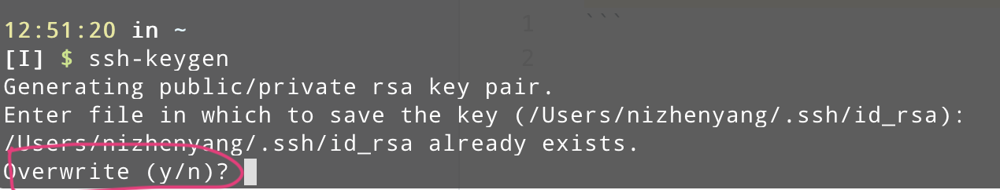
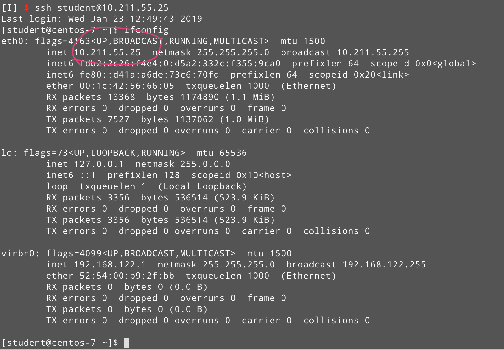
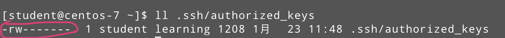

省事有三：
- 登录不要密码
- sudo不要密码 (非root用户)
- su不要密码 (非root用户)
环境参数
- 本地 MacOS 10.14
- 远程 虚拟机Centos7
- 请熟悉vim的基本使用
创建测试用户组及账户
现在服务器端创建测试用户
1 | # 添加一个用户组 learning |
登录不要密码
这里是指用ssh远程登录，确保本地有ssh客户端，在本地的命令中两行命令搞定
1 | # 生成本地秘钥 |
注意，如果已经存在的话会有如下提示

安全起见请输入 n
1 | # 上传至服务器端 |
那个ip是我的服务器的ip，在服务器上使用 ifconfig 指令可查看服务器ip

完成之后ssh登陆就不要密码啦
如果不成功的话一种可能是服务器端 ~/.ssh/authorized_keys 权限是否正确

当然，在执行完第一个指令后，你也可以把本地的 ~/.ssh/id_rsa.pub 的内容拷贝到服务端的~/.ssh/authorized_keys的文件中，这样就不用执行第二条指令了
sudo 不要密码
修改 /etc/sudoers 即可
先切换到root模式
1 | su root |
对，是要root密码的
vim打开这个文件 /etc/sudoers，请无视只读属性，保存的时候输入 w! 就可以了，加入这么一行
1 | student ALL=(ALL) NOPASSWD: ALL |
赋予用户 student 一切的权限且不要输入root密码（虽然还是执行sudo获取root权限）
su 不要密码
先回到sudent用户状态
1 | exit |
接下来修改文件 /etc/pam.d/su，把下面两行的注释去掉
1 | auth sufficient pam_wheel.so trust use_uid |
进入root模式，接下来创建用户组(如果不存在的话) wheel
1 | groupadd wheel |
执行如下命令将student加入其中
1 | usermod -G wheel student |
好了，请切换至 student 用户用 su 随意切换